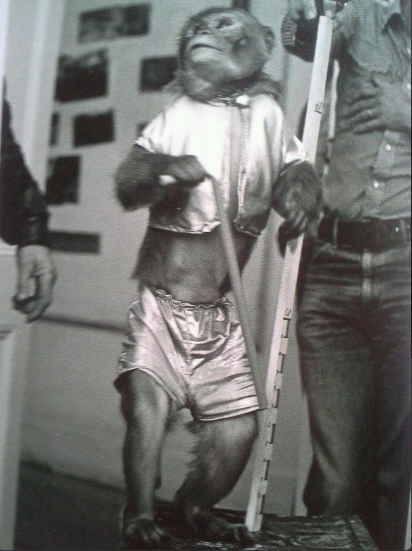

Star Wars
Se você é um fã no mundo Geek, talvez só de falar em 4 de maio você já saiba do que se trata, isso mesmo, Star Wars! Em 4 de maio é quando reunimos nossas forças jedi, entramos na nave Millenium Falcon e lutamos contra Stormtroopers. O dia é mundialmente conhecido pelos geeks, mas não só por ter personagens cativantes, batalhas épicas, sabres de luz ou a tão conhecida frase dita pelo Mestre Yoda “Que a força esteja com você”. Star Wars também cativou os fãs por seus bastidores.
Algumas curiosidades que levaram os bastidores ao destaque:
“Luke, eu sou seu pai”
O momento mais marcante da série Star Wars, no qual Darth Vader revela ser o pai de Luke Skywalker, levou mais de uma semana para ser filmada. A cena leva em torno de 2 minutos no filme.
Jar Jar Binks
O personagem Jar Jar Binks é parte de um grande trabalho de computação gráfica, mas um modelo real foi utilizado nas filmagens, como nessa cena com o ator Jake Lloyd.
Que a força esteja com a BANANA?
Num primeiro momento, George Lucas pretendia que Mestre Yoda fosse interpretado por um macaco. O animal seria treinado para carregar a bengala e usaria uma máscara. Ao abandonar o plano, Henson entrou em ação e criou o primeiro fantoche motorizado da história do cinema (o macaco da imagem é o que seria escolhido para o papel de Yoda).

Algumas curiosidades com George Lucas (criador de Star Wars), nos bastidores:
George Lucas adorava supervisionar as cenas gravadas para que nada fugisse de seu controle, um exemplo disso pode ser visto na cena de combate entre o mestre Windu e o Imperador Palpatine. George Lucas acompanhou a gravação de perto, do início até o fim. Não é à toa que se tornou uma das franquias de mais sucesso no mundo audiovisual.
Outro fato bastante curioso é que todos os filmes de Star Wars até o Star Wars: “o despertar da força” (2015), foram lançados próximos ao aniversário de George Lucas, que acontece em 14 de maio.